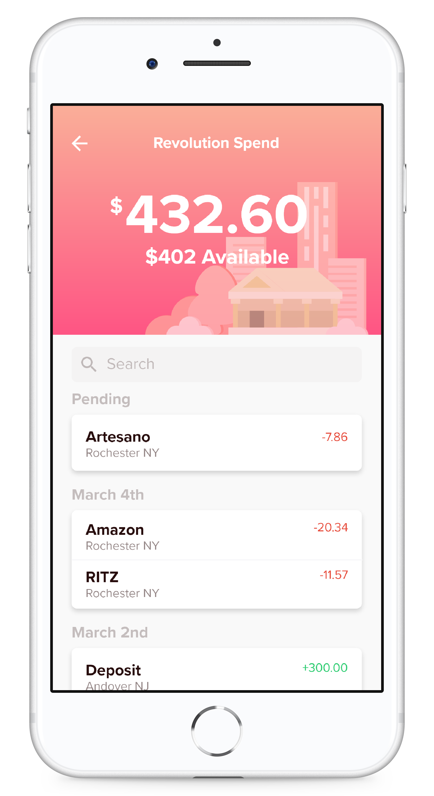
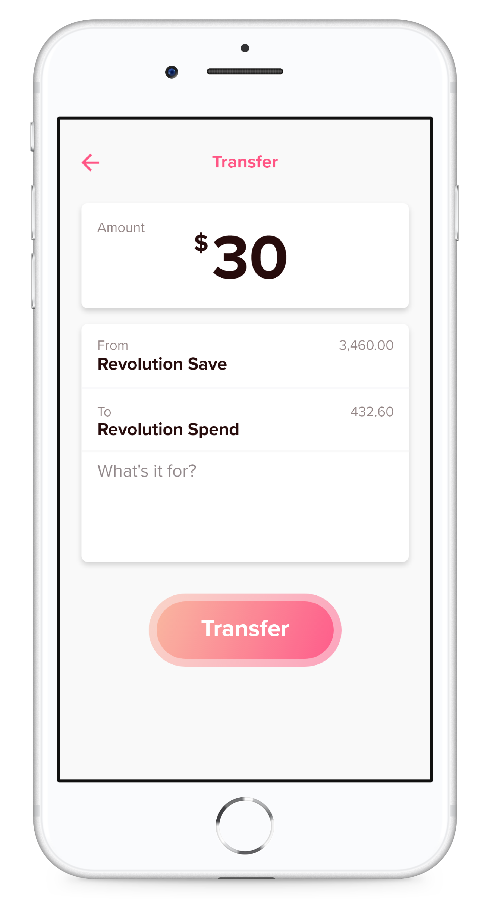
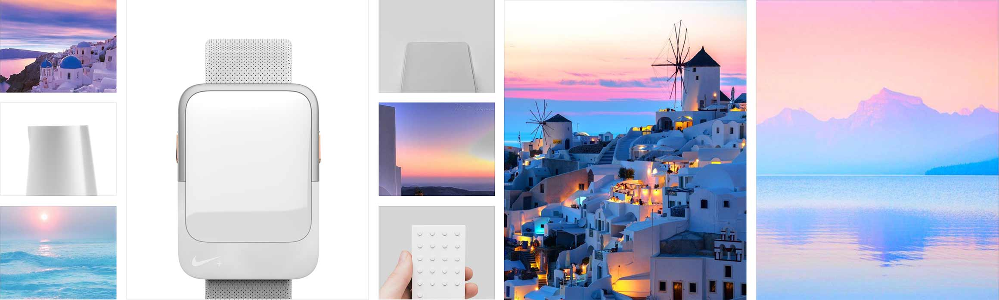

Same App New Look
I redesigned the Affinity Mobile Banking app to meet the expectations of young users and to satisfy the interests of the business. Subtle gradients and illustrations were used to bring the design in line with modern trends, while generous spacing and a clear visual hierarchy ensure clarity and usability.


Finding the Mood
When finding the mood for the design, I wanted to avoid looking at existing UI for my first references to avoid the pitfalls of the products already on the market. Instead I found inspiration in modern Industrial Design and Photography. I was especially inspired by white Mediterranean homes resting against the natural gradients of a sunset. This became a key influence for my design direction.
